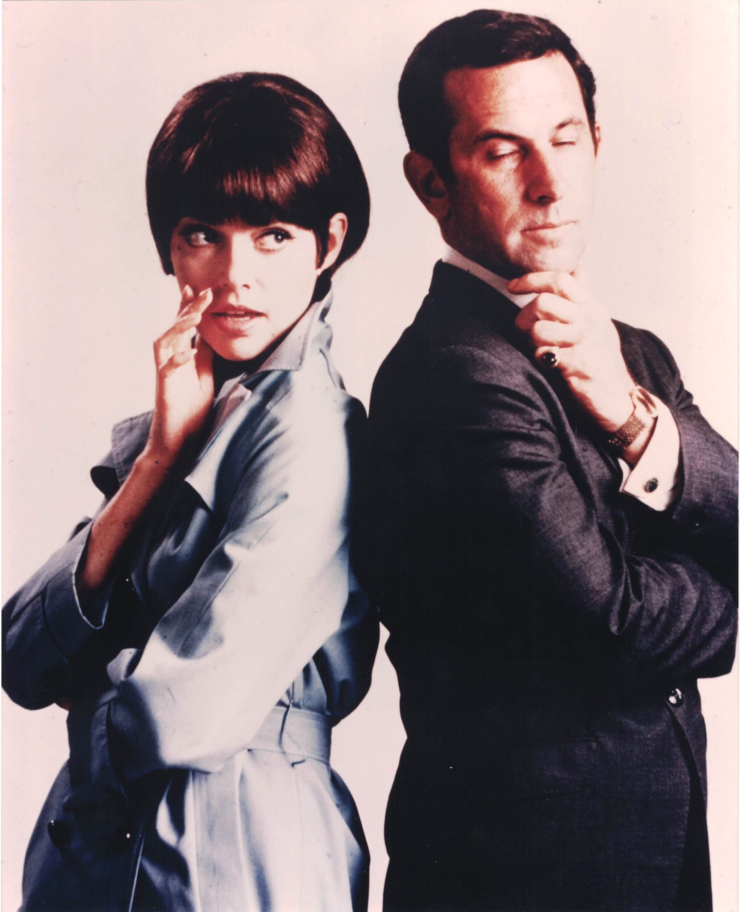

Product No. HEC-0071
$12.99
Shipping: $8.95
Description
8x10 color photograph as Maxwell Smart and Agent "99"
Full Description
"Get Smart" is an American television comedy series that originally aired from 1965 to 1970. Created by Mel Brooks and Buck Henry, the show was a clever parody of spy movies and secret-agent television programs that were extremely popular during the 1960s. The series starred Don Adams as Maxwell Smart, Agent 86 of the secret intelligence organization CONTROL. Smart was confident and enthusiastic but frequently clumsy, accident-prone, and completely unaware of many of his own mistakes. Barbara Feldon co-starred as the highly capable Agent 99, who regularly helped Smart escape dangerous situations. CONTROL battled the evil organization KAOS, whose agents were constantly plotting against the United States and the rest of the free world. Edward Platt played the long-suffering Chief of CONTROL, who often struggled to manage Smart's unpredictable behavior. "Get Smart" became famous for its inventive gadgets and recurring jokes, including Maxwell Smart's shoe phone, the Cone of Silence, and catchphrases such as "Would you believe...?" and "Missed it by that much." The series won several Emmy Awards and developed a lasting following through reruns and syndication. It later inspired reunion projects, feature films, and a 2008 movie adaptation. "Get Smart" remains one of television's best-known spy comedies, and memorabilia associated with Don Adams, Barbara Feldon, and the series continues to appeal to collectors of classic television and 1960s pop culture.
Condition
Excellent condition